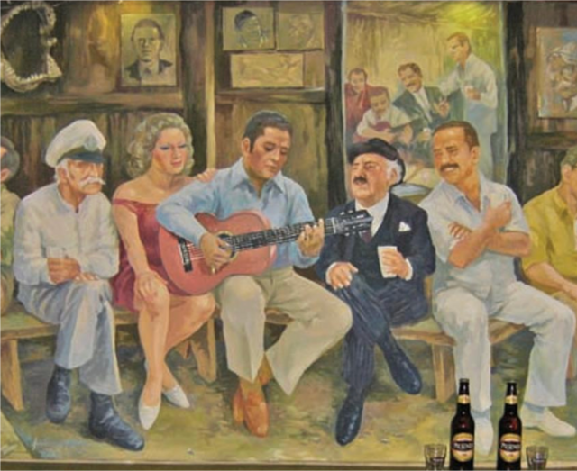

Desde los sanjuanitos de la sierra y los pasillos de la costa, hasta los ritmos amazónicos, la música ecuatoriana es un tapiz de historias, paisajes y emociones. Cada nota cuenta la historia de nuestro pueblo.
Nos dedicamos a preservar y difundir la riqueza de la música tradicional y contemporánea de Ecuador. Creemos en el poder de la música para conectar generaciones y mantener viva nuestra identidad.